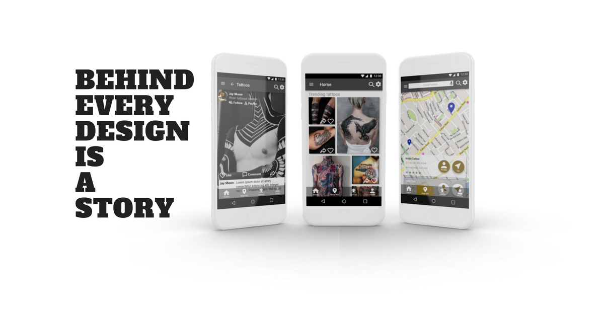
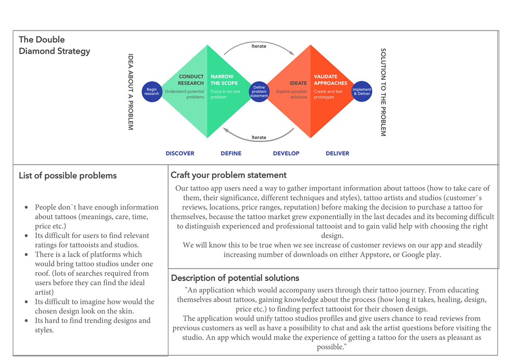
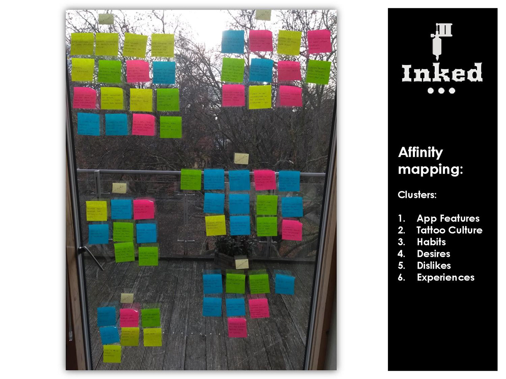
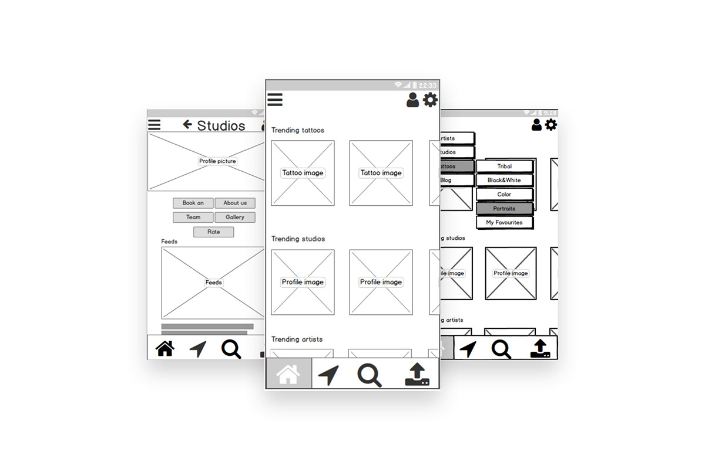
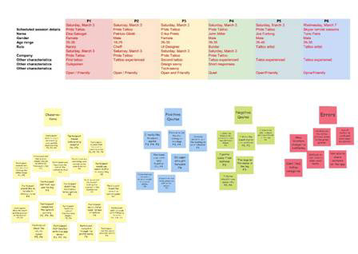
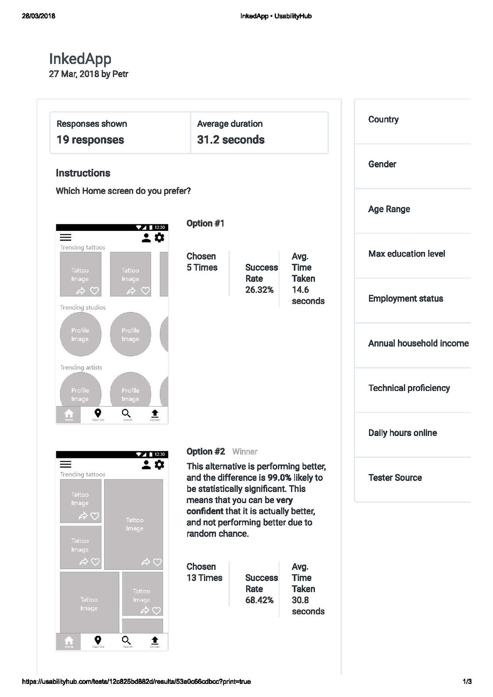
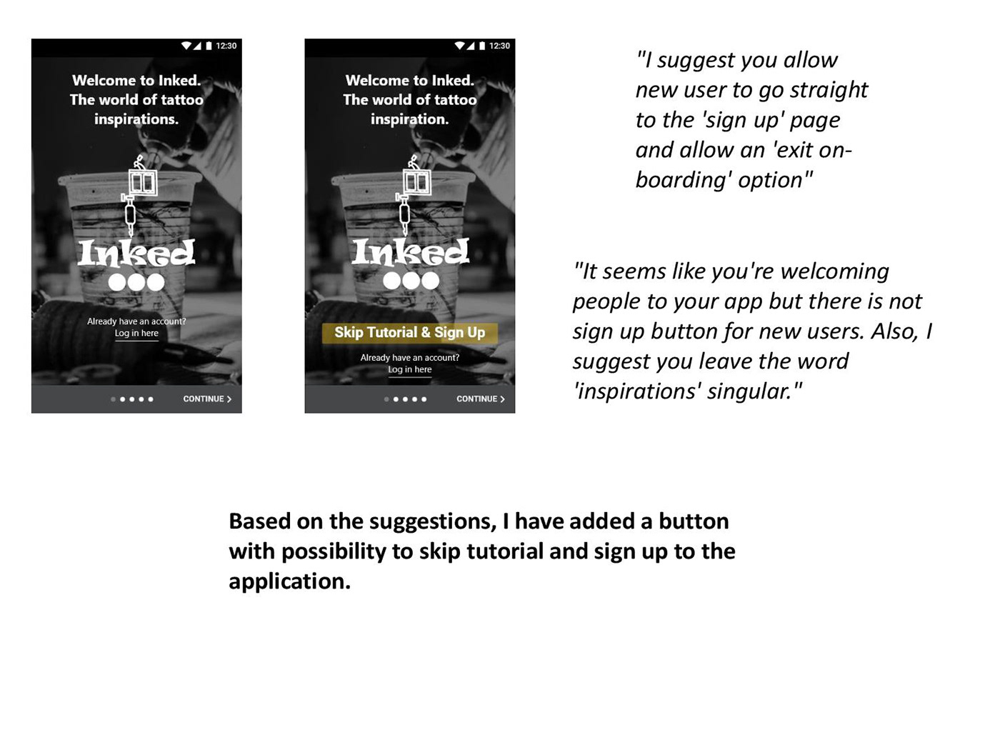
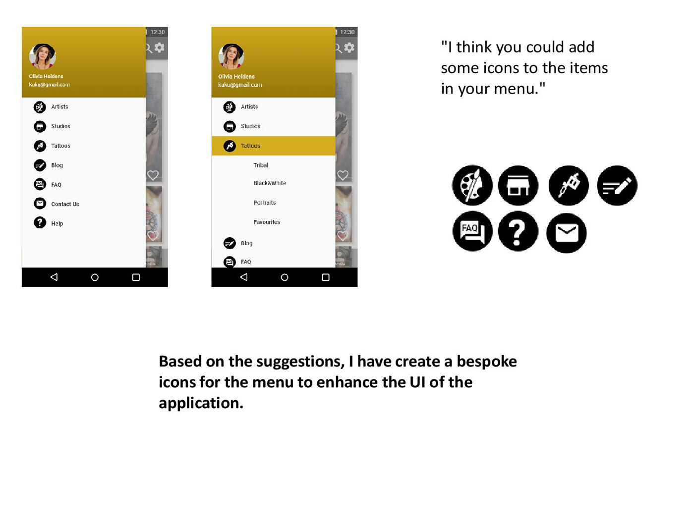
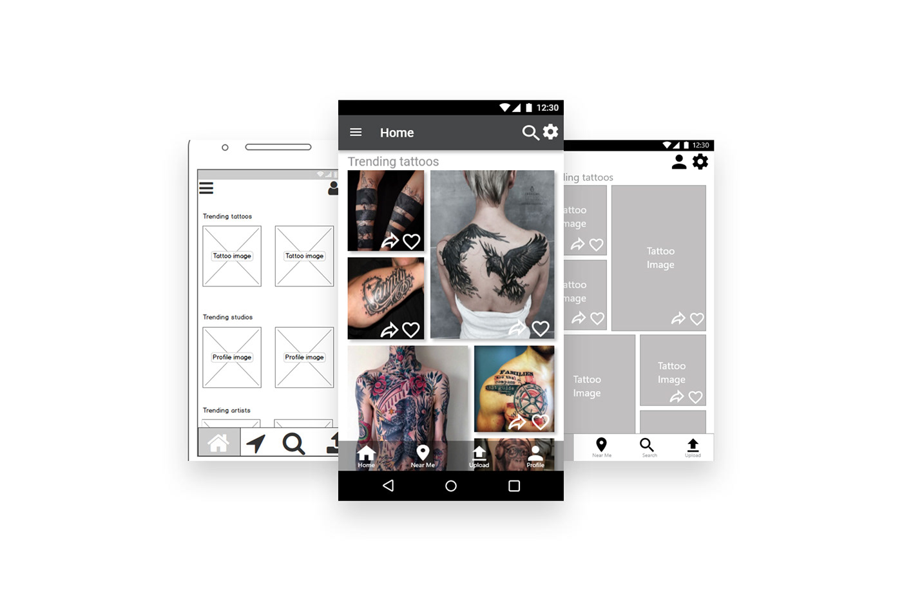

INKED APP
Inked App is a sole UX project where we were responsible for implementing the entire UX process as well as designing the high fidelity wireframes and prototype.
To establish the problem which a social application focusing on the tattoo industry could face, we conducted initial interviews with potential tattoo customers as well as with industry professionals. We also provided in-depth competitors analysis with their strength and weaknesses and learnt from the outcome.
Our findings showed that the biggest issues in this area are lack of knowledge when people decide to acquire a tattoo and difficulty to extract inspiration from various sources on the internet.
RESEARCH

Based on this research we have created the following problem and hypothesis statements:
Our tattoo app users need a way to gather important information about tattoos (how to take care of them, their significance, different techniques and styles), tattoo artists and studios (customer`s reviews, locations, price ranges, reputation) before making the decision to purchase a tattoo for themselves, because the tattoo market grew exponentially in the last decades and its becoming difficult to distinguish experienced and professional tattooist and to gain valid help with choosing the right design.

We believe that by creating this user centred social application for our clients we will achieve increase of customer reviews on our app and steadily increasing number of downloads on either Appstore, or Google play.
Therefore the challenge with this application would be to create reliable space where users can connect with like-minded people, share their information and experiences and gain inspiration for their artwork or tattoos.
After analysing our interview findings we managed to obtain deeper understanding of our potential users' thinking. This helped us to highlight the most important issues and concerns people have when deciding to acquire tattoos and also discover desires they have when using mobile applications.
DESIGN
Thanks to the collaboration with some of my peers, we managed to establish core app functions and categories which the app navigation menu will be divided into.
Our team began to sketch the paper design at this point. We quickly learned how important collaboration is within the team and with the stakeholders, because with their help, we discovered problems that might have been overlooked. For example, the artist's gallery screen was missing in our initial design.
After fixing this first of many problems we could create the first low fidelity prototype using Balsamiq program. As we realised later on, it would have been a good idea to test this initial prototype.
In the future Our team will be testing all prototypes from the beginning with at least 5 potential users to have a chance to discover possible design flaws at the very beginning of the process and save time.
TESTING

With the design nearly ready, it was time to reached out once again to our potential users to test out the mid-fidelity prototype. Using the Marvell app and pre-written test script, the prototype was tested with 6 potential customers. All tests were moderated, 5 in person and 1 remote.
These tests allowed us to uncover few issues within the design, some more significant than the others, but all needing some addressing.
For example, our lack of ability to share pictures from the main screen was considered a significant flaw as our goal was to create a social application and sharing ideas should be its core function.
IMPROVEMENTS
At the end of the process, after revising some other social applications which focuses on visual impact, the decision was made to redesign our home screen and to run preference test with our potential clients to see which version they preferred.
The new design was hugely more popular, as you can see on the screen shot from Usability Hub preference test.
With the new design of the home screen another user testing was required to see if there were any functionality errors.
The final part of the design process was polishing the UI of the application using design grids and spacing, reviewing accessibility guidelines and making adjustments to suit people with different needs, and to achieve a visually pleasing and a all user-friendly application.
Elements were adjusted using 6 columns grids, based on the bootstrap responsive guidelines. The secondary colour was adjusted using colour contrast checker to suit AAA rating. Error warning messages were added to suit visually impaired users and lastly, labels and placeholders were also added to achieve a clearer and more accessible design.
We learnt that reviewing the guidelines during the design process is very important to achieve a design which suits everyone without restrictions.
As the last part of the design process, other designers were invited to collaborate on the design and their suggestions were taken on board.
As mentioned above this was the most important part of the process as it opened our eyes and allowed us to see mistakes and flaws we could have missed.
IMPLEMENTATION
During this UX design process, we have learnt that designing an application cannot be done individually. Even when working remotely, it’s crucial to collaborate with other professionals (UI designers, developers etc.). This will allow the designer to see his work from another perspective, take on board critique of other designers and learn from his and their mistakes.
